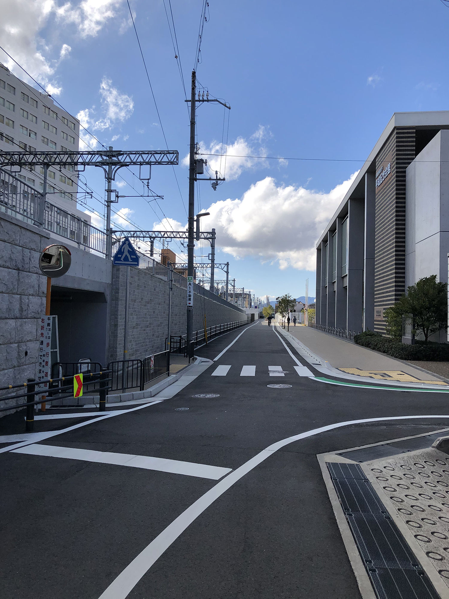

后记 | SUMMARY

Nishinomiya
These two weeks were really fast. In this trip, we went to top 3 powerlifting gyms in Osaka. I noticed that everyone no matter their current level, they all put the effort to the session. I was also lucky that some world bench presser gave me hand-on tips and techniques. Especially Kodoma San, Tsubasa kun, and every one in 8suki gym, K's gym, and muscle production
Japan is a country where you have to slow down your pace because you can always find some thing attract you. 7-11's bento has so many different variations and doesnt taste like a supermarket food. Every street food has their own uniques. If I have time, I wish I could explore more in Namba.